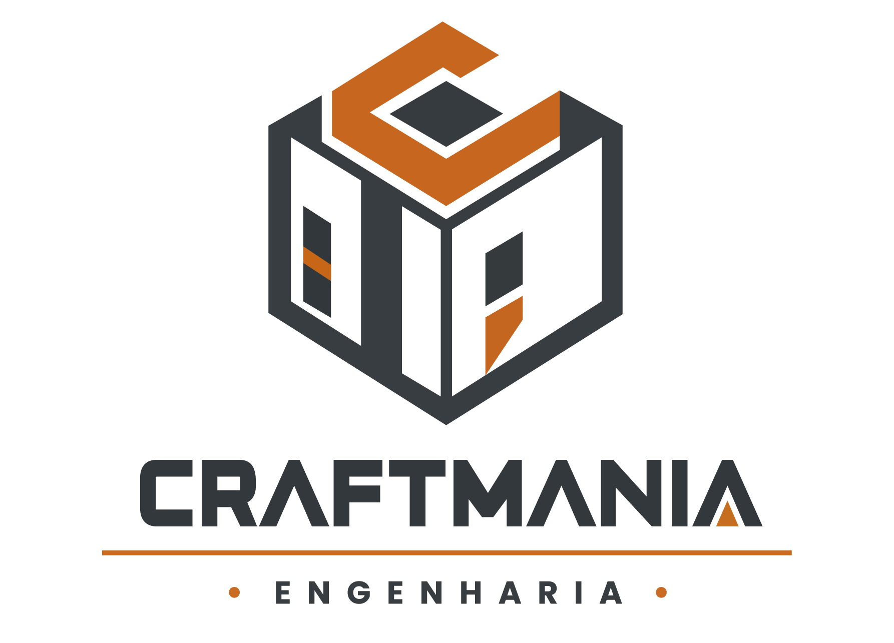

Validação e Alinhamento Técnico com Clientes
Responsável pela validação de projetos web diretamente com clientes, garantindo alinhamento técnico, qualidade de entrega e cumprimento de escopo.
Desenvolvedor Web Pleno com 6 anos de experiência em tecnologia, especializado em ecossistemas WordPress, WooCommerce e Elementor.
Com 6 anos de experiência na área de tecnologia, especializado em ecossistemas WordPress, WooCommerce e Elementor.
Atuação sólida no ciclo completo de projetos web: da concepção do layout à infraestrutura de servidores e otimização de alta performance. Histórico comprovado em liderança técnica, gestão de projetos e integração de sistemas complexos de e-commerce.
Desenvolvedor autodidata com forte atuação prática e contínua evolução técnica em arquitetura web, e-commerce, estruturação de landing pages de alta performance e administração de servidores Linux.
Projetos e plataformas web desenvolvidos focando em alta conversão, responsividade e experiência do usuário.
Loja virtual com WooCommerce, elementor e Snippets personalizados
Manutenção em páginas e personalização via ACF e Snippets
Adaptação do layout estático para layout dinâmico e e refinamento dos functions.php
Correções no SMTP e integração com CRM
Soluções personalizadas via snippets, integrações com com CRM, manutenção em páginas e diversas personalizações no tema
Adaptação do layout estático para layout dinâmico, integrações com CRM e configuração de SMTP
Adaptação do layout estático para layout dinâmico, integrações com CRM e configuração de SMTP

Adaptação do layout estático para layout dinâmico, integrações com CRM e configuração de SMTP e personalização via functions.php
Galeria de layouts e protótipos de interfaces criados para landing pages, e-commerces e sistemas web.

Responsável pela validação de projetos web diretamente com clientes, garantindo alinhamento técnico, qualidade de entrega e cumprimento de escopo.

Atuação focada na análise, planejamento e gestão estratégica de projetos web, otimizando fluxos de trabalho e alocação de recursos técnicos.

Responsável pela elaboração e produção de layouts focados em conversão para landing pages e websites institucionais, além da criação e personalização avançada de e-commerces com PHP/JS.
Stack completa para o ciclo de projetos web, do front-end à infraestrutura, com automação e integrações de e-commerce.
HTML5, CSS3, JavaScript (JS), PHP e SQL (MySQL).
WordPress, WooCommerce, Elementor e WPCode Snippets.
Páginas de alta conversão, testes de performance, otimização de velocidade de carregamento, responsividade (Mobile-First) e layouts focados em captação de leads.
MySQL, servidores Linux (VPS) e Docker.
Git, integração de APIs, automação com IA (geração de códigos, filtros PHP, scripts de banco de dados) e otimização de fluxos com RD Station e Mautic.
Master blueprints WordPress, integração com ERPs (Olist) e IA aplicada à geração de código e automação de marketing.